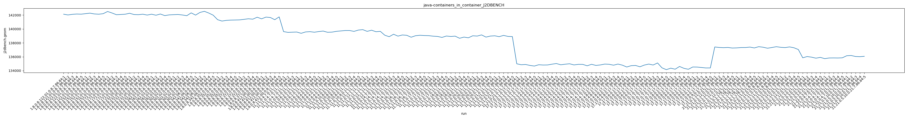
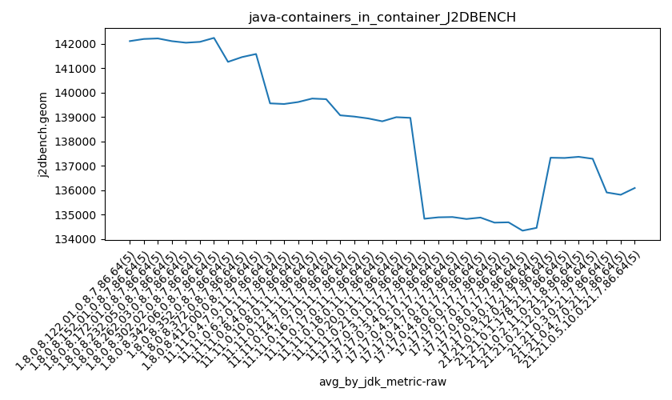
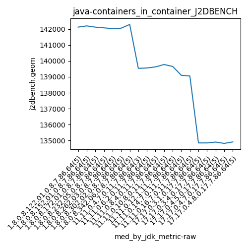
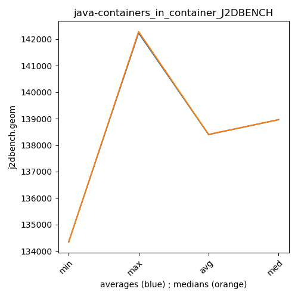

java- J2DBENCH
Context at bottom
/home/jvanek/git/benchmarks-in-nested-virtualisation-toolchain/final_results/containers_in_container_results/containers_in_container_DACAPO
java-
J2DBENCH
/home/jvanek/git/benchmarks-in-nested-virtualisation-toolchain/final_results/containers_in_container_results/containers_in_container_JMH
java-
J2DBENCH
/home/jvanek/git/benchmarks-in-nested-virtualisation-toolchain/final_results/containers_in_container_results/containers_in_container_SPECJBB
java-
J2DBENCH
/home/jvanek/git/benchmarks-in-nested-virtualisation-toolchain/final_results/containers_in_container_results/containers_in_container_RADARGUNs1
java-
J2DBENCH
/home/jvanek/git/benchmarks-in-nested-virtualisation-toolchain/final_results/containers_in_container_results/containers_in_container_J2DBENCH
java-
J2DBENCH
containers_in_container_J2DBENCH
final score
Expected number of java- JDKs: 37
1st avgmed_alljdks_metric:
/home/jvanek/git/benchmarks-in-nested-virtualisation-toolchain/final_results/result_processing.py /home/jvanek/git/benchmarks-in-nested-virtualisation-toolchain/final_results/containers_in_container_results/containers_in_container_J2DBENCH j2dbench.geom False
values: [142122, 142014, 142104, 142147, 142126, 142202, 142272, 142159, 142121, 142197, 142510, 142298, 142050, 142082, 142120, 142257, 142075, 142053, 142121, 141998, 142121, 141975, 142149, 141918, 142024, 142054, 142080, 142009, 141906, 142312, 141992, 142375, 142535, 142287, 141981, 141336, 141135, 141236, 141273, 141287, 141305, 141379, 141465, 141406, 141690, 141457, 141704, 141646, 141328, 141738, 139620, 139508, 139534, 139556, 139374, 139571, 139611, 139529, 139626, 139695, 139521, 139544, 139655, 139716, 139774, 139777, 139650, 139839, 139902, 139653, 139820, 139601, 139653, 139100, 138885, 139240, 138969, 139134, 139086, 138811, 139028, 139091, 139054, 139036, 138960, 138924, 138782, 138981, 138918, 138965, 138660, 138829, 138728, 139018, 138976, 139144, 138829, 138976, 139017, 138889, 139074, 138927, 138902, 134989, 134854, 134891, 134754, 134665, 134854, 134812, 134822, 134933, 135027, 134848, 134929, 134994, 134827, 134908, 134905, 134701, 134918, 134754, 134825, 134947, 134917, 134789, 134950, 134793, 134528, 134718, 134751, 134558, 134806, 134948, 134814, 135110, 134409, 134146, 134361, 134212, 134605, 134336, 134201, 134529, 134517, 134456, 134391, 134396, 137406, 137339, 137309, 137338, 137256, 137278, 137326, 137331, 137391, 137270, 137451, 137371, 137230, 137333, 137447, 137359, 137320, 137416, 137296, 137041, 135849, 136033, 135943, 135798, 135913, 135729, 135825, 135834, 135824, 135851, 136148, 136183, 136038, 136012, 136065]

Expected number of iterations: 5
final number of values: 183 out of 185
Pass rate: 98.9%
values: (134146, 142535, 138386.57923497268, 138927)

** accuracy from all jdks and runs
more is better
MIN: 134146
MAX: 142535
AVG: 138386.57923497268
MED: 138927
Relative differences 1:
MIN-MAX: 6.0 %
MIN-AVG: 3.0 %
MIN-MED: 3.0 %
MAX-MIN: -6.0 %
MAX-AVG: -3.0 %
MAX-MED: -3.0 %
AVG-MED: 0.0 %
stored to java-.properties. sort | uniq that!
2nd avgmed_by_jdk_metric:
values: [142102.6, 142190.2, 142212.0, 142100.8, 142037.4, 142072.2, 142234.0, 141253.4, 141449.0, 141574.6, 139554.0, 139528.2, 139608.2, 139751.2, 139725.8, 139065.6, 139014.0, 138936.6, 138820.0, 138988.6, 138961.8, 134830.6, 134889.6, 134901.2, 134820.6, 134879.2, 134672.2, 134685.4, 134343.0, 134457.8, 137329.6, 137319.2, 137366.4, 137286.4, 135907.2, 135812.6, 136089.2]

values: [142122, 142197, 142120, 142075, 142024, 142054, 142287, 141273, 141406, 141646, 139534, 139556, 139626, 139774, 139653, 139100, 139054, 138960, 138829, 138976, 138927, 134854, 134854, 134908, 134825, 134917, 134718, 134814, 134336, 134456, 137338, 137326, 137371, 137320, 135913, 135825, 136065]

values: (134343.0, 142234.0, 138399.2, 138961.8)
values: (134336, 142287, 138406.2972972973, 138960)

** accuracy from all jdks where runs were avged
more is better
MIN: 134343.0
MAX: 142234.0
AVG: 138399.2
MED: 138961.8
Relative differences 1:
MIN-MAX: 6.0 %
MIN-AVG: 3.0 %
MIN-MED: 3.0 %
MAX-MIN: -6.0 %
MAX-AVG: -3.0 %
MAX-MED: -2.0 %
AVG-MED: 0.0 %
stored to java-.properties. sort | uniq that!
** accuracy from all jdks where runs were medianed
more is better
MIN: 134336
MAX: 142287
AVG: 138406.2972972973
MED: 138960
Relative differences 1:
MIN-MAX: 6.0 %
MIN-AVG: 3.0 %
MIN-MED: 3.0 %
MAX-MIN: -6.0 %
MAX-AVG: -3.0 %
MAX-MED: -2.0 %
AVG-MED: 0.0 %
stored to java-.properties. sort | uniq that!
/home/jvanek/git/benchmarks-in-nested-virtualisation-toolchain/final_results/containers_in_container_results/containers_in_container_RADARGUNs3
java-
J2DBENCH
pass rates:
containers_in_container_J2DBENCH=98.9%
Context:
- containers_in_container_results
- J2DBENCH